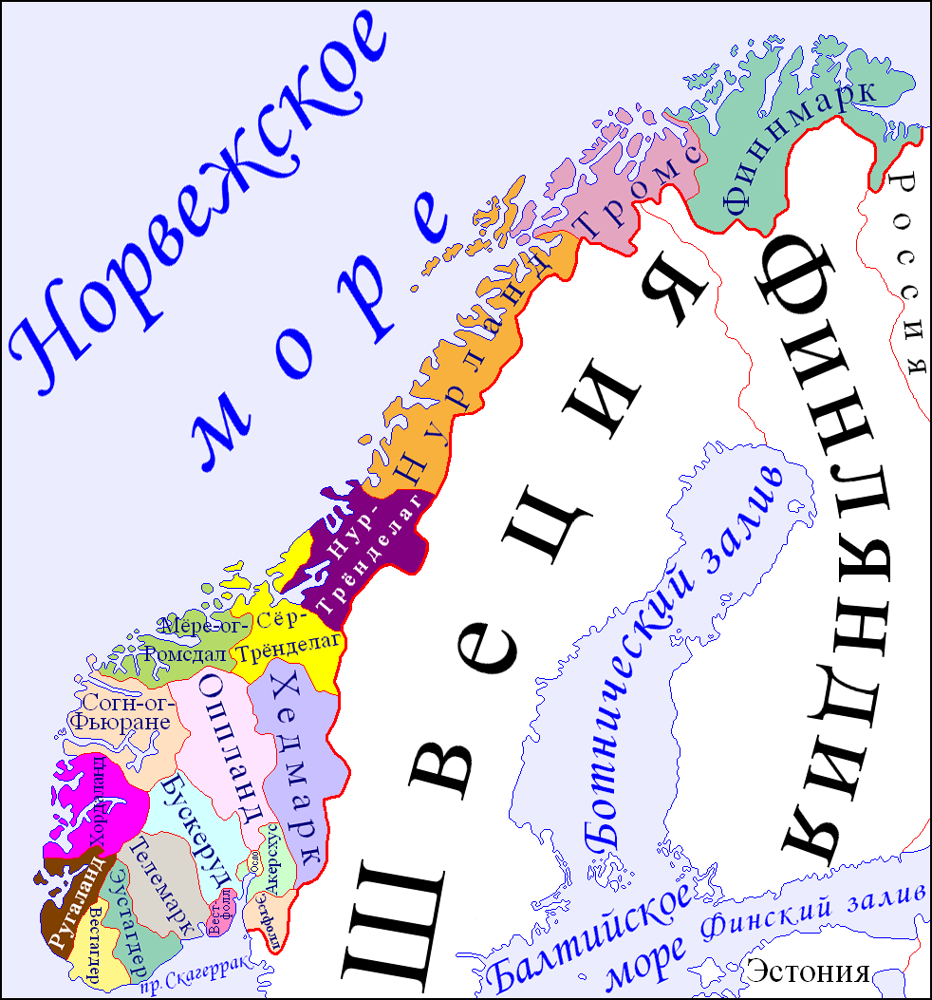

Расположение

Королевство Норве́гия, Норве́гия (букмол Kongeriket Norge, нюнорск Kongeriket Noreg) — государство в Северной Европе, располагающееся в западной части Скандинавского полуострова и на огромном количестве прилегающих мелких островов, а также архипелаге Шпицберген (Свальбард), островах Ян-Майен и Медвежий в Северном Ледовитом океане.
Заморской территорией Норвегии является остров Буве в южной части Атлантического океана.
Население
Численность населения Норвегии — 5 245 041 человек (2015 год), это одна из наименее населённых стран Европы. Плотность населения составляет 16 чел./км². Однако размещение населения крайне неравномерное. Свыше 1⁄5 населения сосредоточено на юге Норвегии, на узкой прибрежной полосе вокруг Осло-фьорда (1⁄2) и Тронхеймс-фьорда. Более 80 % населения сосредоточено в Южной, Западной и Восточной Норвегии, причём в последней — почти половина. Городское население — 78 %, в том числе свыше 1⁄5 — в столичной агломерации. Под городской местностью понимаются такие поселения, которые имеют население более 200 человек и состоят из домов, удалённых друг от друга на расстояние, не превышающее 50 метров. В районе Осло-фьорда сосредоточена примерно треть населения страны, поэтому это регион с наибольшей его плотностью — 1404 чел./км². Причём в собственно городской агломерации Осло проживает 906 681 человек[источник не указан 1100 дней] (по данным на 1 января 2011 года). Другие крупные города — Берген, Тронхейм, Ставангер, Кристиансанн, Фредрикстад, Тромсё и Драммен.
Религия
Статья 2 раздела А Конституции Норвегии гарантирует каждому гражданину страны право на свободу вероисповедания. В то же время эта же статья по прежнему указывает, что евангелическое лютеранство является государственной религией Норвегии. По закону, король Норвегии и по меньшей мере половина министров должны исповедовать лютеранство. По состоянию на 2006 год, согласно официальной статистике, 3 871 006 человек или 82,7 % населения принадлежат к государственной Церкви Норвегии (норв. Den norske kirke)[. На 1 января 2014 года по данным самой церкви 75 % населения страны принадлежали к Церкви Норвегии. Однако, лишь около 2 % населения регулярно посещают церковь. Многие из норвежцев «записаны» в число прихожан Церкви Норвегии «по умолчанию». Если в семье по крайней мере один из родителей является членом этой официальной церкви, то ребёнок автоматически «получает» веру зарегистрированного родителя, поэтому подавляющее большинство участников норвежской церкви не сделали ничего для того, чтобы присоединиться к этой религии.
Государственное устройство
Норвегия — унитарное государство, основанное на принципах конституционной монархии и парламентской демократии. В стране действует конституция 1814 года с рядом позднейших поправок и дополнений. Король является главой государства и исполнительной власти. Королём Норвегии с 1991 года является Харальд V.
Высшим законодательным органом страны является однопалатный парламент — Стортинг. По основному закону страны Норвегия провозглашалась «свободным, независимым и неделимым государством», имеющим «монархическую, ограниченную и наследственную форму правления», причем изначально король обладал очень широкими полномочиями, которые постепенно уменьшались вместе с реформами конституции. Изначально король имел право назначать членов Совета, которые были ответственны только перед ним, однако с установлением в 1884 году парламентаризма, то есть ответственности правительства, опирающегося на парламентское большинство, перед Стортингом, он потерял это право. Установление такого порядка было очень долгим, начало было положено ещё в 1859 году внесением законопроекта о допущении членов правительства к заседаниям стортинга с правом совещательного голоса, и осложнялось межпартийными противоречиями между Венстре и Хёйре, в которой победили левые силы. Именно в эти годы две основные политические силы «окончательно сформировались как общенациональные, со своим представительством в парламенте». Победа левых сил привела к их приходу к власти последовавшему за этим расколу в связи с разногласиями в программах проведения реформ.